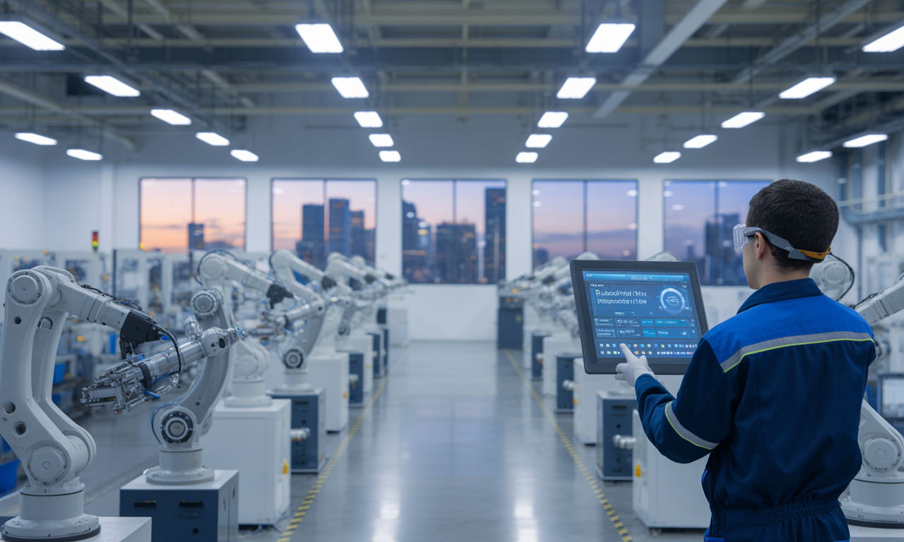

biz-hub - odm manufacturing - sistar mfg
sistar mfg
"SISTAR Mfg., Studio & Retail Hubs — The Engine of Localization uniting Dual-Stream Korea–Indonesia ODM, Physical AI compounding robotics, Mint-Colored retail franchises, and shoppable media."
▫️ SISTAR Mfg. — The Engine of Cross-Border Localization
SISTAR Mfg. bridges 50-year Korean R&D formulation excellence with localized ASEAN production and Physical AI robotics to slash MOQs and landed unit costs:
- • Dual-Stream ODM & Rp 1,320 Sachet Quantization: Stream A exports finished premium lines (SC, FYD, RxVet, Botanical Edition, FloralGlow) from Korea, while Stream B ships concentrated bulk raw materials to Indonesia for local GMP single-dose sachet repacking at Rp 1,320/unit.
- • Physio-Formulator R1 Compounding Robotics: Deploys autonomous 30-liter liquid/gel compounding robots for rapid university industry-academia R&D pilot batches, customized veterinary medicated shampoos, and derma-cosmetics.


▫️ SISTAR Mint, Membership I/II/III, Studio & sisRun Campaigns
Manufacturing output connects seamlessly with our physical/digital retail franchises, media production factory, and community wellness movements:
- • SISTAR Mint (Mint-Colored Shop) & Membership Tiers I, II, III: Asset-light online/offline retail and self-service pet/wellness store formats supported by three structured partner and consumer membership tiers.
- • SISTAR Studio & sisRun Community Campaigns: Produces 10+ multilingual shoppable videos daily while building offline brand loyalty through sisRun running-meditation and pet-owner wellness events.

▫️ Detailed Archive: SISTAR Mfg. The Engine of Localization
Comprehensive operational records, strategic frameworks, and source specifications preserved from SISTAR Mfg. The Engine of Localization:
- • SISTAR Mfg. The Engine of Localization
- • A strategic subsidiary driving global manufacturing localization through seamless partnerships and operational excellence.
- • SISTAR Mfg. is a strategic subsidiary of SISTAR Company, established to capitalize on the growing global trend of manufacturing localization. Its mission is to be the go-to partner for companies seeking to produce or adapt their products for specific local markets.
- • By leveraging SISTAR Company's extensive resources—including its AI-driven data analysis from sisAI, its global network through SISTAR Frenz, and its IT services from BIONDI—SISTAR Mfg. provides a seamless and efficient path to market.
- • The business model is a blend of a productized service and a strategic partnership, focusing on creating win-win scenarios where both SISTAR and its partners achieve success through localized, on-the-ground manufacturing.
- • Core Business Model: Localization as a Service
- • SISTAR Mfg. operates on a two-pronged model that combines operational expertise with strategic collaboration.
- • This innovative approach ensures maximum efficiency while creating sustainable partnerships that benefit all stakeholders in the manufacturing ecosystem.
- • Localization for Internal Ecosystem
- • Primary Manufacturing Partner
- • SISTAR Mfg. first serves as the primary manufacturing partner for all of SISTAR Company's ventures.
- • Perfect Process Development
- • This internal focus allows SISTAR Mfg. to perfect its processes and build a robust, scalable system before expanding to external clients.
- • This creates a highly efficient, closed-loop ecosystem where manufacturing is seamlessly integrated with sales, marketing, and logistics.
- • For example, it would handle the local production of products for SISTAR Mint's "mint-color shops" or manage the supply chain for sisPet's daily deliveries.
- • External Manufacturing Partnerships
- • This is SISTAR Mfg.'s external-facing revenue stream. It identifies and partners with global brands that wish to localize their manufacturing to reduce costs, improve supply chain resilience, or better serve a new market.
- • This model allows SISTAR Mfg. to generate revenue from external clients while simultaneously strengthening SISTAR's internal operations.
- • Local Production Management
- • Acting as a local production hub, managing everything from sourcing raw materials and quality control to assembly and final product delivery.
- • Supply Chain Optimization
- • Using data from sisAI to predict demand, manage inventory, and optimize logistics to ensure products are always available and costs are minimized.
- • Advising partners on the best way to enter a new market, including insights on local regulations, consumer preferences, and manufacturing best practices.
- • SISTAR Mfg. is a crucial component of SISTAR's strategy for global expansion. By providing a low-risk, high-efficiency path to localization, it enables SISTAR Company's subsidiaries and external partners to scale rapidly and sustainably.
- • This model ensures SISTAR is not just a digital platform provider but a comprehensive partner that can handle the physical aspects of business, reinforcing its position as a leader in building a fully integrated, global ecosystem.
- • The SISTAR Ecosystem Integration
- • AI-driven insights for demand prediction and optimization
- • Global connections and market access
- • Technology infrastructure and digital solutions
- • Manufacturing and localization expertise
- • Competitive Advantages
- • Seamless connection between digital platforms and physical manufacturing capabilities
- • AI-Powered Optimization
- • Data-driven decision making through sisAI integration for superior efficiency
- • Proven Internal Success
- • Battle-tested processes through internal SISTAR Company partnerships
- • Leveraging SISTAR Frenz connections for rapid market entry and expansion
- • The Future of Manufacturing Localization
- • SISTAR Mfg. represents the evolution of manufacturing in a globalized world, where localization meets innovation to create sustainable, efficient, and scalable business solutions.
- • Through strategic partnerships and operational excellence, we're building the foundation for the next generation of global manufacturing success.
- • Start Your Partnership
▫️ Detailed Archive: SISTAR Company E-Commerce Platform Portfolio
Comprehensive operational records, strategic frameworks, and source specifications preserved from SISTAR Company E-Commerce Platform Portfolio:
- • SISTAR Company E-Commerce Platform Portfolio
- • Building a comprehensive, interconnected e-commerce ecosystem with strategic pillars designed to leverage shared AI technology, data analytics, and operational efficiency across the entire commerce value chain.
- • Introduction to SISTAR's E-Commerce Ecosystem
- • SISTAR is building a comprehensive, interconnected e-commerce ecosystem. Each platform is a strategic pillar designed to leverage a central core of shared AI technology, data analytics, and operational efficiency.
- • This portfolio demonstrates SISTAR's ability to execute a multi-faceted business strategy, mitigating risk and ensuring a robust, scalable business model capable of capturing value across the entire commerce value chain.
- • Scarlet.Ai: SISTAR Ai-Commerce
- • The cornerstone of our e-commerce strategy, Scarlet.ai is an AI-driven platform that offers a personalized and intelligent experience. It leverages AI agents for automated product searches, price tracking, and even autonomous transactions. Its innovative group buy/sell system harnesses collective buying power to secure optimal pricing.
- • Scarlet.ai is a game-changer that redefines the customer-centric model. By integrating features like transparent real-time tracking, a "Guarantee Delivery" program, and a unique model of returning payment gateway fees to the customer, we are building deep, long-term trust.
- • sisMall.Ai: Master SISTAR Mall
- • The central hub for all our retail projects, offering a curated experience for the end consumer.
- • The sisMall.Ai model allows for agile market entry and a focused approach to different product categories.
- • sisMall.Ai: SISTAR for Retailing, by Project
- • A project-based retail platform, allowing us to launch and manage individual, high-growth retail ventures with speed and precision.
- • This strategy ensures that we are positioned to capture value from both the consumer and business sides of the market, creating a strong, vertically integrated commerce ecosystem.
- • sisPet: Pet, day delivery online shop
- • A specialized online shop focused on pet products, offering a daily delivery service.
- • A highly targeted platform that caters to a specific, high-demand niche.
- • ForeverYoung: Therapeutic, Telemedicine
- • A platform dedicated to therapeutic and telemedicine services, prioritizing health and wellness.
- • This venture addresses the growing demand for digital health solutions.
- • Industrial & International Trade
- • Indoherb: herbal for raw materials for Industry
- • Our industrial platform, providing raw herbal materials for various industries.
- • This is a strategic move, positioning SISTAR as a key facilitator of international trade, a high-value sector with significant growth potential.
- • A business-to-business platform specifically designed to facilitate Indo-Korean trade.
- • This venture positions SISTAR as a key facilitator of international trade, a high-value sector with significant growth potential.
- • B2B & Wholesale Solutions
- • sisMarket: SISTAR Wholesaling
- • A platform engineered for business-to-business transactions, providing a seamless platform for large-scale procurement and distribution.
- • This platform establishes our presence in the lucrative wholesale sector.
- • Local & Community Platforms
- • A "Shop-NearBuy" platform that connects customers with nearby businesses for a convenient, hyper-local shopping experience.
- • This shows our understanding of modern consumer behavior and our focus on hyper-local convenience.
- • Mint-colored shop/ Mint street: SISTAR mint, my Neighbour lifestyle platform
- • This venture focuses on a seamless blend of online and offline experiences, centered around community and lifestyle.
- • This is an excellent example of our "phygital" (physical + digital) strategy, proving our commitment to creating holistic, community-focused experiences that go beyond a simple transaction.
- • mall.sisTV.Com: SISTAR Studio, w. video contents
- • An innovative platform that merges e-commerce with rich video content, offering a new way for brands to engage with customers through compelling storytelling and product demonstrations.
- • This is a forward-looking move that leverages the powerful medium of video content.
- • This comprehensive portfolio showcases SISTAR's strategic vision of creating an interconnected ecosystem that captures value across the entire commerce value chain, from AI-driven personalization to community-focused experiences.